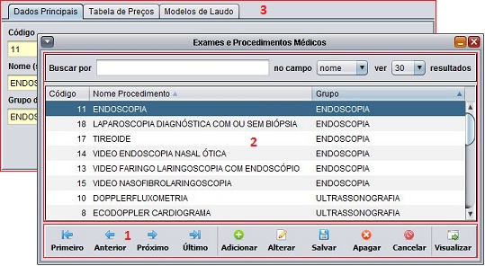
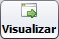
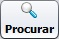

Conhecendo a tela de cadastros
As telas de cadastro possuem em três partes básicas:
1. Barra de controle de navegação e registro
São as opções da barra de ações que controlam todo o funcionamento da tela de cadastro.
Os botões Primeiro, Anterior, Próximo, Último navegam entre os registros listados na tabela.
O botão Adicionar abre e habilita o formulário para a inserção de um novo registro no banco de dados.
O botão Alterar abre e habilita o formulário para a alteração do registro selecionado no banco de dados.
O botão Salvar registra as informações do formulário no banco de dados.
O botão Apagar exclui do banco de dados o registro selecionado.
Para cancelar a inserção ou a alteração de um registro, utilize o botão Cancelar.
|  | Mostra as informações do registro selecionado no formulário. |
|  | Abre a tabela de buscas de registros para fazer a procura de um registro. |
| Faz a impressão de um documento do registro. | |
| Retorna o registro selecionado para a utilização em um outro formulário. |
|
2. Tabela de buscas de registros
Neste painel, é possível buscar por registros através dos filtros presentes na parte superior. |
3. Formulário de registro
Neste painel, é mostrado o formulário com as informações do registro. Por padrão o formulário fica desabilitado. Só é habilitado quando está em modo de adição ou edição.